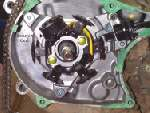
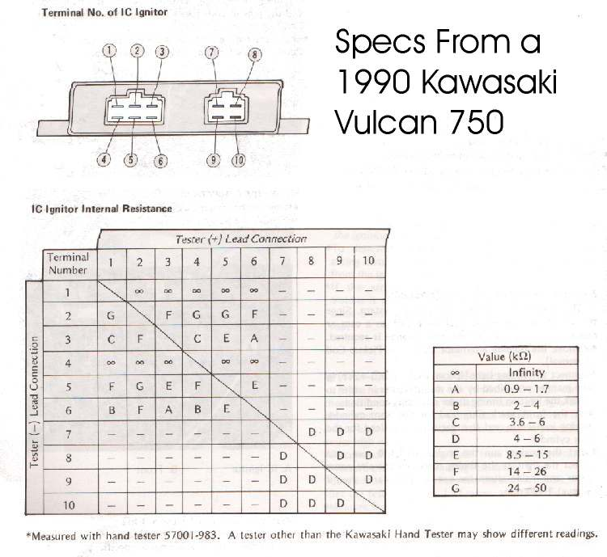
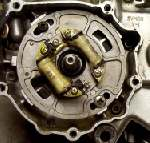
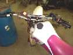
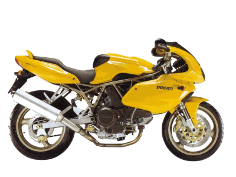
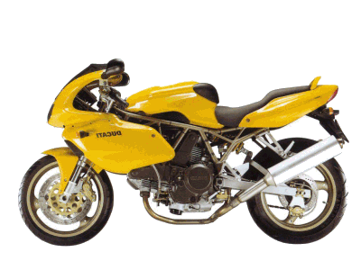

"But God hath chosen the foolish things of the world
to confound the wise..."
First Corinthians 1:27
¶

Electronic Ignition... so easy to get to, so easy to test... so easy. I hate electronic ignition systems. At least, I hate to work on them. I wish I could tell you I know everything about motorcycle electronic ignitions, but, well, after working on these things since they first came out I can categorically state that I don't know 'nothing about them. So I'll just ramble on about them for a while, and if you read real carefully, you will know as little as I do.Most Electronic Ignitions have four parts that can fail. trigger (pickup) coil, a source coil, a CDI unit (Black Box) and an ignition coil. The trigger coil tells the black box when to trigger the spark. It does this when a small magnet on the flywheel passes the trigger. The source coil produces the power. The black box coordinates everything and tells the ignition coil when to fire the spark plug. This is for a magneto and requires no battery, as the power comes from the source coil. Battery Ignition CDIs use the battery as a power source. The battery is then recharged by the charging system.
Now, when I say CDI I mean Capacitor Discharge Ignition, but I am also lumping in all types of ignitions that don't use points. Each manufacturer has their own design and way of thinking. However, they all seem to have those four parts. Trigger coil, source coil, black box, and ign coil. Usually, they give you specs on the trigger unit, source coil, and ignition coil. Sometimes, they give specs on the CDI box too. These specs are given as resistance values in Ohms. That means we can test them to see if they are good... sort of... most times... maybe. Some manufacturers also give values for the black boxes too, and some don't. All this means these things are very hard to test accurately. Fortunately, most of the electronic ignition units are quite reliable and require no service, but this plus turns to a minus when they do go bad. They are very hard to trouble shoot. To top it off, most motorcycle CDIs are expensive to replace, and when they go out, the bikes are too old to justify the expense of replacement.
They say electronic ignition doesn't change once it is set. BUT, IT DOES. Sometimes, it will change as it fails. This can give some pretty weird running. It can also cause the engine to overheat and seize. This is something to remember when you rebuild an engine that blew up for seemingly no reason.
OK, we can use an ohm meter to check most things except the black box, and sometimes, even the black box... If we are lucky. Well, maybe things tested Ok. You have to remember, on all electrical things, they test either bad or they might be good. There are a number of very expensive testers out there, and they all claim to work great. But do they?
Let me tell you a story. I once had a snowmobile come in which would die (no spark) after 5-6 minutes of running. I had factory specs on everything including the black box. Everything tested OK, even when hot. Long story short, I finally ended up talking to the owner of a business that made aftermarket, replacement, snowmobile CDI boxes. He told me all the factory specs were wrong, and gave me some new specs that he said sometimes worked and as he was very knowledgeable about electronic ignitions I asked him what tester he used. He told me he had tried them all and none of them worked. He said for each new CDI box design his company bought an engine, and modified it so they could run it with an electric motor. They could then test the black boxes by substitution. Customers could send in their factory CDI boxes and he could test them to see if they were good. He said they had a whole warehouse full of these modified engines. This was back in 1988-89. I like to think they have something better now... however, I still can't afford a tester other than an Ohm meter.
The reason I'm telling you all this, is to give you an idea of the amount of hassle these things can be. Many times I've read factory bulletins telling their people in the field to be more careful. They're sending back, under warranty, too many "bad" boxes that turn out to be good.

Check each Ohm reading several times and remember most specs give a temperature to check at, usually 70 degrees. So don't leave the bike out overnight at 30 degrees and expect to get an accurate reading. Sometimes there will be a spec for the black box, and sometimes not. Here are the specs on a Kawasaki Vulcan. Others, if they give any, look similar. As you can see, there are a fair number of tests to perform. Maybe this is why a lot of manufacturers don't give any specs. Honda used to give specs, but it seems they don't anymore. Yamaha doesn't give any. Kawasaki and Suzuki both sometimes give specs and sometimes defer to special factory testers. Others? You will have to look in the shop manual.
The shop manual will give you the color of the wires to test and the correct resistance too. If everything is within spec, recheck all the connectors and the grounds. If all is OK the only thing to do is replace the black box. Sometimes you can get the part off a working bike and substitute it for the part in question. Most times this can work pretty good. Other times the bad part can take out other good parts. The reason this can happen is because these systems produce very high voltages. That voltage has to go somewhere. Sometimes it can burn it's way through the side of the plastic case. The good news is that this is quite rare in most motorcycle systems. Don't you love the way I use most and sometimes and might and maybe? There's good reasons why electrical parts are sold with no warranty.
Another thing to check is the air gap between the trigger and the magnet on the flywheel. Usually this is done with non-magnetic, brass, gauges. You can also use a piece of plastic of the right thickness. That thickness is usually .005" to .010". Try to get the parts as close as you can, without them hitting.

Most Dirt bikes are a CDI magneto, and do not require a battery. Most street bikes are a battery charged CDI, and need a fully charged battery. That battery also has to run the starter, lights, radio, and other stuff in addition to the ignition. Different things require different power requirements from the battery. We think of the battery as supplying a steady 12 volts and it should. But, things can vary. What does all this have to do with electronic ignition? Most electronic ignitions require a full 12 volts to give out a good spark. If you let the bike sit a long time or the battery is weak, you may not get a full 12 volts. Now the starter may spin just fine, but the starter requires amps more than volts.
Think of it like this. Amps are volume, volts are pressure. Amps won't jump a spark plug gap and volts won't spin that starter. At least they won't in the numbers that we deal with. Anyway, the starter is spinning but the ignition is not getting enough volts to fire the spark plug. The moral? Make sure you have a good, fully charged battery in the machine before you start hunting for ignition problems.
 Don't unplug anything while the engine is running. That includes the spark plug cap. These systems can produce a lot of volts, like 18,000-30,000 and more. It's got to go somewhere. Readers Digest magazine had a big expose' on bad auto mechanics. They pulled one spark plug cap loose and took it to a bunch of different mechanics. They complained that a lot of those mechanics did detailed, expensive tests, instead of just popping the plug cap back on. Those mechanics didn't do anything wrong. Pulling that plug could have fried the entire ignition system. I've seen it happen. When you check for spark, ground that plug to the engine. The spark should easily jump a 1/4" gap. If it won't jump 1/4", or more, outside the engine, it won't jump .030" inside the engine under compression. A handy tool is a spark tester. There are lots of different types. You can buy one or you can make one yourself real easy.
Don't unplug anything while the engine is running. That includes the spark plug cap. These systems can produce a lot of volts, like 18,000-30,000 and more. It's got to go somewhere. Readers Digest magazine had a big expose' on bad auto mechanics. They pulled one spark plug cap loose and took it to a bunch of different mechanics. They complained that a lot of those mechanics did detailed, expensive tests, instead of just popping the plug cap back on. Those mechanics didn't do anything wrong. Pulling that plug could have fried the entire ignition system. I've seen it happen. When you check for spark, ground that plug to the engine. The spark should easily jump a 1/4" gap. If it won't jump 1/4", or more, outside the engine, it won't jump .030" inside the engine under compression. A handy tool is a spark tester. There are lots of different types. You can buy one or you can make one yourself real easy.
Take a new spark plug and bend the side electrode out straight. Now solder a small clamp on the side and you are done. Clamp it to the cylinder head and hook up the spark plug cap. Crank the engine and you can easily see the spark. The engine can and will run if you connect the tester clamp to the end of the spark plug. Provided, of course, the plug is good and installed in the engine.
Remember, that spark is what sets the air/fuel mix burning. It can do the same outside the engine too.
Make sure there is no spilt gasoline or other flammable mixtures on or near that Spark Tester.
Keep a fire extinguisher handy.

Well, there you go. Hopefully all this will help. One thing for sure... you now know as little as I do!

 |
 |
Copyright © 1999-2002 dansmc.com. All rights reserved.